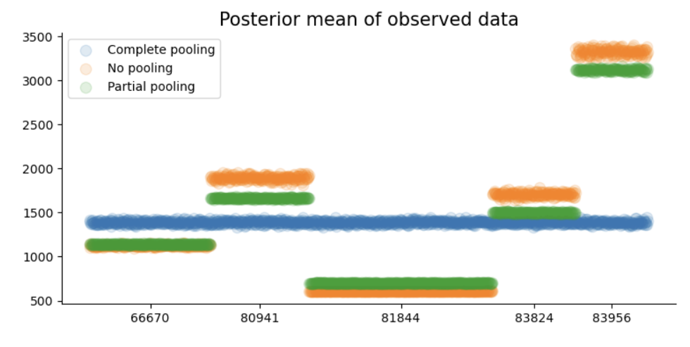
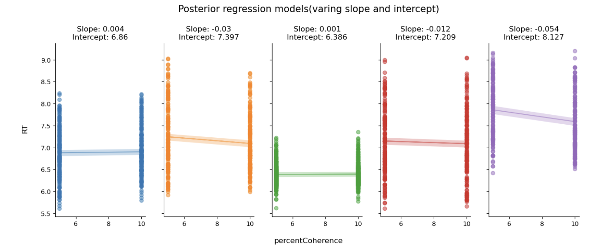
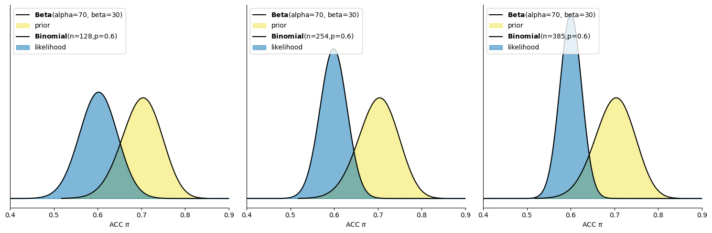
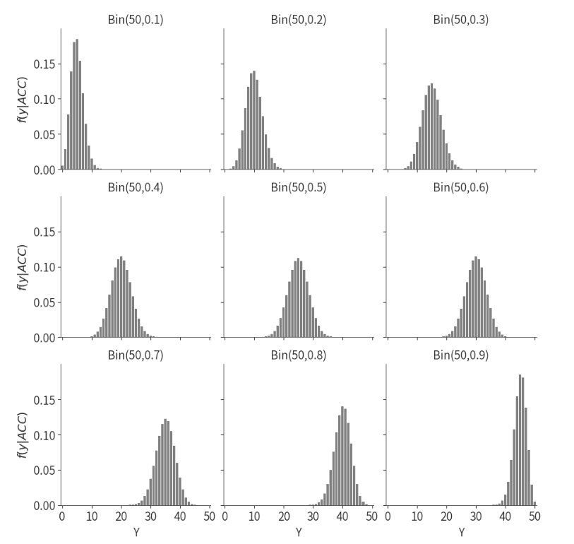
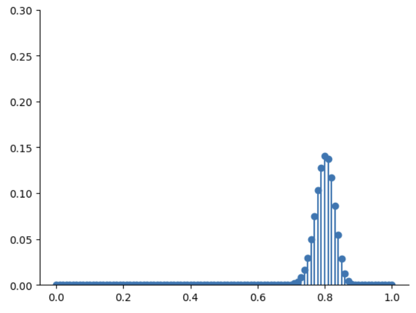
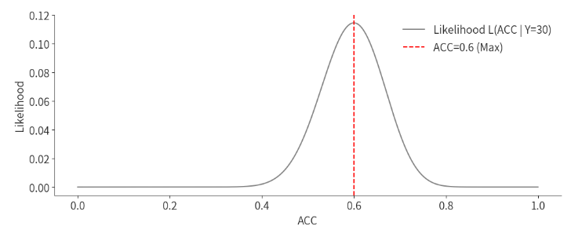

Multivariable linear regression#
回顾#
在前面的九次课程中，我们系统性地介绍了贝叶斯统计的核心概念，并通过一个简单的线性回归模型展示了如何构建和应用一个相对简单的贝叶斯workflow。
贝叶斯公式——基础：

为了帮助大家建立关于贝叶斯推断的直觉，我们使用了三种情境：单一事件、离散变量和连续变量：
知识点 |
内容描述 |
先验 |
似然 |
贝叶斯更新 |
|---|---|---|---|---|
单个事件 |
一个使用特定语言风格的心理学实验被成功重复出来的可能性 |
OSC2015的结果 |
Herzenstein et al 2024年的研究结果 |
可视化的方式 + 简单计算 |
离散变量 |
多次试验(多次进行重复实验)的成功率 |
人为分配的三种成功率(0.2, 0.5, 0.8)和它们出现的可能性 |
进行重复后的结果在三种成功率下出现的可能性 |
简单的手动计算 |
连续变量 |
多次试验(多次进行重复实验)的成功率/正确率 |
符合成功率/正确率(0~1)特点和先验经验的概率分布 |
进行重复后的结果在所有成功率/正确率下出现的可能性 |
已被证明的统计学公式 |
在chapter8、9中，我们以一个认知实验中的研究问题——自我和他人条件下的反应时间是否有差异 出发，建立了一个简单的线性回归模型，并完成了贝叶斯数据分析的全流程。

Sui, J., He, X., & Humphreys, G. W. (2012). Perceptual effects of social salience: Evidence from self-prioritization effects on perceptual matching. Journal of Experimental Psychology: Human Perception and Performance, 38(5), 1105–1117. https://doi.org/10.1037/a0029792
-然而，我们在真实的实验研究中很少只涉及单因素两水平设计，更多会采用多因素的设计，并且需要考察交互作用。至此，我们可以开始进入更真实的场景，使用贝叶斯数据分析来解决一个真实的问题。
Sui等人(2012)的真实数据如下(2*3的被试内设计)：
# 导入 pymc 模型包，和 arviz 等分析工具
import pymc as pm
import arviz as az
import seaborn as sns
import scipy.stats as st
import numpy as np
import matplotlib.pyplot as plt
import xarray as xr
import pandas as pd
# 忽略不必要的警告
import warnings
warnings.filterwarnings("ignore")
try:
df_raw = pd.read_csv('/home/mw/input/bayes3797/Kolvoort_2020_HBM_Exp1_Clean.csv')
except:
df_raw = pd.read_csv('/data/Kolvoort_2020_HBM_Exp1_Clean.csv')
df = df_raw.groupby(['Subject','Label', 'Matching'], as_index=False)['RT_sec'].mean()
# 将 Label 列的数字编码转为文字标签
df['Label'] = df['Label'].replace({1: 'Self', 2: 'Friend', 3: 'Stranger'})
df['Matching'] = df['Matching'].replace({'Matching': 'matching', 'Nonmatching': 'nonmatching'})
# 设置索引
df["index"] = range(len(df))
df = df.set_index("index")
df

print(f"Label列共有 {df['Label'].unique()} 类" )
Label列共有 [‘Self’ ‘Friend’ ‘Stranger’] 类
通过查看数据可知，在自我匹配任务中，被试学习几何图形和身份标签的关系应为，例如，三角形代表自我（Self）；圆形代表朋友（Friend），正方形代表陌生人（Stranger），随后判断所呈现的几何图形和文字标签是否与之前学习的关系相匹配。
因此，真实的实验情境是一个2*3的被试内实验设计的数据。其中，标签（自我相关性）是可以有三个水平的：自我、朋友和陌生人。
如果我们对标签的效应感兴趣，那我们可能就要回答第一个问题：“三种Label条件下的反应时差异是怎么样的？”，即如何构建“Label”变量编码为3个水平的线性模型？
同时，该实验设计还有另一个自变量，即匹配水平(“Matching”)，包括“匹配”和“不匹配”两个水平。这个自变量会对反应时间产生影响吗？这是第二个研究问题：“匹配水平(“matching”)是否会影响反应时间？”
通常，我们也可能想知道第三个问题：两个自变量之间是否有交互作用？在不同的匹配水平(“matching”)下，标签“Label”的效应是否会发生变化？。
本节课我们将展示如何在贝叶斯统计框架下，通过3个线性回归模型来回答以上问题：
三水平的简单线性回归模型
2×3的多元线性回归模型（无交互）
2×3的多元线性回归模型（有交互）
注：为了简化研究问题，本节课使用的是多个被试的数据。“Subject” 为被试编号，代表不同被试。
此外，数据中的因变量不是单个试次下被试的反应时和正确性，而是在不同条件下的平均反应时和正确率。
模型一：三水平的简单线性回归模型#
在前面两次课时中，我们使用了二分类编码（例如Self = 0, Other = 1）来表示“Label”条件，但这次我们考虑的是三水平的单因素“label”条件（Self、Friend、Stranger）。
为了能对离散的多分类变量建立回归模型，我们需要使用哑变量编码(dummy coding)来处理这类多水平的自变量。
哑变量编码规则#
对于三水平分类变量 “Label” (Self, Friend, Stranger)，我们可以使用 Treatment Coding 编码，以第一个水平 “Self” 作为基准（baseline）。
在回归分析中，自变量可以是数值型的（如身高、体重）或分类型的（如性别、实验组别）。对于分类变量（如 Label：Self、Friend、Stranger），因为它们是文本或类别，无法直接输入到回归模型中，因此需要将它们转换为数值形式。
treatment编码是将分类变量转化为数值型变量的一种常见方式，通常是：
选择一个基线水平（Baseline level）：通常是分类变量的第一个水平。
创建哑变量：通过 n-1 个对比列，表示其他水平相对于基准水平的差异。
那么，当我们选择“self”作为基线水平，编码矩阵应该如下：
Label |
截距(baseline) |
对比列 1 (Friend vs Self) |
对比列 2 (Stranger vs Self) |
|---|---|---|---|
Self |
1 |
0 |
0 |
Friend |
1 |
1 |
0 |
Stranger |
1 |
0 |
1 |
截距(baseline)：对应 Self，即当所有对比列值为 0 时，截距\(\beta_0\)对应self条件下平均反应时的估算值。
对比列1（Friend vs Self）：在第一列中为1，表示Friend相对于Self的差异。
对比列2（Stranger vs Self）：在第二列中为1，表示Stranger相对于Self的差异。
其他编码模式
treatment coding这种以 [0, 1] 的编码方式是R语言中的默认方式，也称为哑变量编码（dummy coding）。这种方式以 [0, 1] 为编码规则，默认将第一个因子水平作为参考类别（reference level），其他水平与其进行比较。
此外无序因子常用的还有sum coding，采用的是[1, -1]的编码方式，以使因子效应在模型中进行加权平均。
其他的编码方式还有很多，如果感兴趣，可以通过以下参考资料自行了解。（尤其是最后一篇文章，它比较详细地介绍了各种情境下该如何建立编码矩阵，进而顺利解决研究问题）
编码方式 |
编码规则 |
|---|---|
Treatment Coding |
参考水平编码为 0，其余水平编码为 1 |
Sum Coding |
一个水平编码为 -1，其余水平编码为 1，所有系数和为 0 |
Helmert Coding |
每个水平与之后所有水平的平均值比较 |
Orthogonal Polynomial Coding |
使用正交多项式编码函数（线性、二次、三次趋势） |
Backward Difference Coding |
每个水平与前一个水平比较 |
Custom Coding |
用户自定义编码规则 |
参考资料： 1.Chapter 10 Contrasts | Analysing Data using Linear Models 2.Patsy: Contrast Coding Systems for categorical variables - statsmodels 0.15.0 (+522) 3.Coding for Categorical Variables in Regression Models | R Learning Modules 4.Schad, D. J., Vasishth, S., Hohenstein, S., & Kliegl, R. (2020). How to capitalize on a priori contrasts in linear (mixed) models: A tutorial.Journal of Memory and Language,110, 104038.
为什么需要哑变量编码？
在三水平简单线性回归模型中，因变量（Y：RT_sec）和分类自变量X（Label：Self, Friend, Stranger）的关系可以表示为：
\(\beta_0\)：基线水平（baseline），即“self”条件下的反应时均值
\(\beta_1\)：是指当\(X_1\)取值为1时，“friend”条件与“self”条件的反应时之差
\(\beta_1\)：是指当\(X_2\)取值为1时，“stranger”条件与“self”条件的反应时之差
通过 Treatment 编码：
\(\beta_0\)：直接表示基准组（self）的均值
\(\beta_1和\beta_2\)：表示其他水平相对于基准组的差异
可以发现，\(\beta_1和\beta_2\)分别对应我们感兴趣的两个研究问题：自我条件下的反应时是否快于朋友？以及自我条件下的反应时是否快于陌生人？
模型拟合与推断#
现在，我们按照之前学习过的workflow流程逐步进行：
选择模型和数据处理
由于模型需要X1和X2这两个变量，因此需要先对这两个变量进行编码处理：
# 将 Label 列转换为有序的分类变量
# 需要注意，‘Label’列原本是字符串类型，需要先将其转换为‘categorical’的类别变量
df['Label'] = pd.Categorical(df['Label'], categories=['Self', 'Friend', 'Stranger'], ordered=True)
df['Label']
# 将分类变量转换为哑变量
X1 = (df['Label'] == 'Friend').astype(int)
X2 = (df['Label'] == 'Stranger').astype(int)
先验设定：
我们需要为\(\beta_0\)（截距），\(\beta_1,\beta_2\)（斜率），以及\(\sigma\)（误差项）设置先验分布：
截距\(\beta_0\)：基线水平（self）的均值
即，假设self条件下的平均反应时为5秒，标准差为2，表示在3至7秒范围内有较高的概率。
——注意：这里为截距设置的先验是一个比较模糊的先验，目的是为了避免出现负反应时的错误先验，但实际研究中该先验的合理程度仍然较低，我们后面可以考虑对该先验进行改进。
\(\beta_1\)：friend相对于self的均值差异；\(\beta_2\)：stranger相对于self 的均值差异。
friend或stranger相比于self的反应时均值差异大致在-1至1的区间内，即快1秒或慢1秒。
误差项\(\sigma\)：数据围绕预测均值\(\mu_i\)的波动，使用指数分布：
即，假设反应时的波动集中在小范围内，允许中等程度的波动。并且由于\(\sigma\)是一个正值，因此使用指数分布。
完整模型设定
模型可表示为：
先验设置：
\(Y_i \sim N(\mu_i,\sigma^2),\sigma \sim Exp(0.3),\beta_0 \sim N(5,2^2),\beta_1 \sim N(0,1^2) , \beta_2 \sim N(0,1^2)\)
定义回归模型：
\(\mu_i=\beta_0+\beta_1·X_1+\beta_2·X_2\)
我们可以通过 PyMC 构建该模型，并使用 MCMC 算法进行采样:
import pymc as pm
# 建立模型
with pm.Model() as model1:
# 定义先验分布参数
beta_0 = pm.Normal('beta_0', mu=5, sigma=2)
beta_1 = pm.Normal('beta_1', mu=0, sigma=1)
beta_2 = pm.Normal('beta_2', mu=0, sigma=1)
sigma = pm.Exponential('sigma', lam=0.3)
# 线性模型表达式
mu = beta_0 + beta_1 * X1 + beta_2 * X2
# 观测数据的似然函数
likelihood = pm.Normal('Y_obs', mu=mu, sigma=sigma, observed=df['RT_sec'])
进行后验采样:
with model1:
model1_trace = pm.sample(draws=5000, # 使用mcmc方法进行采样，draws为采样次数
tune=1000, # tune为调整采样策略的次数，可以决定这些结果是否要被保留
chains=4, # 链数
discard_tuned_samples=True, # tune的结果将在采样结束后被丢弃
random_seed=84735) # 后验采样
MCMC诊断和后验推断
我们可以使用az.summary函数来查看诊断和后验推断的摘要。
az.summary(model1_trace)
使用 ROPE+HDI 对参数进行检验:
# 定义 ROPE 区间，根据研究的需要指定实际等效范围
rope_interval = [-0.05, 0.05]
# 绘制后验分布，显示 HDI 和 ROPE
az.plot_posterior(
model1_trace,
var_names=["beta_1", "beta_2"],
hdi_prob=0.95,
rope=rope_interval,
figsize=(9, 3),
textsize=12
)
plt.show()

从上图可以看出，\(\beta_1和\beta_2\)参数的HDI内不包含0，但两者均与ROPE重叠，表明效应不明显。可以使用贝叶斯因子进行进一步假设检验。
此外，\(\beta_1\)的效应在均值和HDI范围均大于\(\beta_2\)。
使用贝叶斯因子进行差异检验
# 进行贝叶斯因子计算，需要采样先验分布
with model1:
model1_trace.extend(pm.sample_prior_predictive(5000, random_seed=84735) )
fig, axes = plt.subplots(1,2, figsize=(10, 3.5))
# 绘制贝叶斯因子图
ax = axes[0]
az.plot_bf(model1_trace, var_name="beta_1", ref_val=0, ax=ax)
# 设置 x 轴的范围
ax.set_xlim(-0.5, 0.5)
ax = axes[1]
az.plot_bf(model1_trace, var_name="beta_2", ref_val=0, ax=ax)
# 设置 x 轴的范围
ax.set_xlim(-0.5, 0.5)
# 去除上框线和右框线
sns.despine()
plt.show()

可以看出，无论对于\(\beta_1还是\beta_2\)，\(BF_{10}\)都接近于1，表明两个参数都没有证据支持它们与0有区别。
后验预测
最后，我们可以使用pm.sample_posterior_predictive函数来生成后验预测。
并通过az.plot_ppc函数来绘制后验预测的基本结果。
with model1:
model1_ppc = pm.sample_posterior_predictiv(model1_trace, random_seed=84735)
az.plot_ppc(model1_ppc, num_pp_samples = 500)

从后验预测图可以看出，大部分是比较符合的，但模型在比较极端的地方表现得没那么好。
🤔那么，我们在真实的研究中也会遇到这种情况，此时需要我们进行权衡：（1）接受这种稍微没有那么完美的模型（2）利用更复杂的模型来进行更完美的拟合。
import xarray as xr
# 导入真实的自变量
X1 = xr.DataArray((df['Label'] == 'Friend').astype(int))
X2 = xr.DataArray((df['Label'] == 'Stranger').astype(int))
# 基于后验参数生成y_model
model1_trace.posterior["y_model"] = model1_trace.posterior["beta_0"] + model1_trace.posterior["beta_1"] * X1 + model1_trace.posterior["beta_2"] * X2
df['Mean RT'] = df.groupby('Label')['RT_sec'].transform('mean')
# 绘制后验预测线性模型
az.plot_lm(
y= df['Mean RT'],
x= df.Label,
y_model = model1_trace.posterior["y_model"],
y_model_mean_kwargs={"color":"black", "linewidth":2},
figsize=(6,4),
textsize=16,
grid=False)
# 设置坐标轴标题、字体大小
plt.xlim(-0.5, 2.5)
plt.xticks([0, 1, 2])
plt.xlabel('Label')
plt.ylabel('RT (sec)')
plt.legend(['observed mean', 'Uncertainty in mean', 'Mean'])
sns.despine()

在实际的认知实验中，我们通常要看每个条件下的平均反应时，现在我们用箱型图进行绘制，并观察预测值和真实观测值之间的差异：
def plot_prediction(df, predicted_y="prediction", ax=None):
if ax is None:
fig, ax = plt.subplots(figsize=(5, 4))
sns.boxplot(x='Label', y='RT_sec', hue='Matching', data=df, palette='Set2', ax=ax)
prediction = df.groupby(["Label", "Matching"])[predicted_y].mean().reset_index()
# 创建映射字典：Label到x位置
label_to_x = {'Self': 0, 'Friend': 1, 'Stranger': 2}
# 将 Label 映射到相应的 x 值
prediction['x_position'] = prediction['Label'].map(label_to_x)
# 根据 Matching 设置偏移量
prediction['x_offset'] = np.where(prediction['Matching'] == 'matching', -0.2, 0.2)
# 计算最终的 x 位置
prediction['final_x'] = prediction['x_position'].to_numpy() + prediction['x_offset'].to_numpy()
ax.plot(prediction['final_x'], prediction[predicted_y], marker='o', linestyle='', color='red', label="prediction")
ax.legend()
import xarray as xr
# 导入真实的自变量
X1 = xr.DataArray((df['Label'] == 'Friend').astype(int))
X2 = xr.DataArray((df['Label'] == 'Stranger').astype(int))
model1_trace.posterior["y_model"] = model1_trace.posterior["beta_0"] + model1_trace.posterior["beta_1"] * X1 + model1_trace.posterior["beta_2"] * X2
df["model1_prediction"] = model1_trace.posterior.y_model.mean(dim=["chain","draw"]).values
plot_prediction(df, "model1_prediction")
# 显示图形
sns.despine()
plt.tight_layout()
plt.show()

可以看到，当仅考虑“Label”条件时，由于没有考虑到“Matching”条件的影响，模型预测的 y 值与真实值存在较大的偏差。